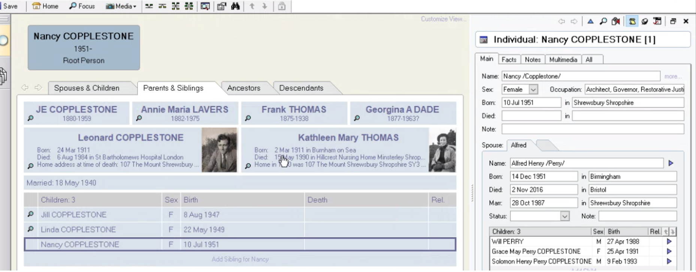
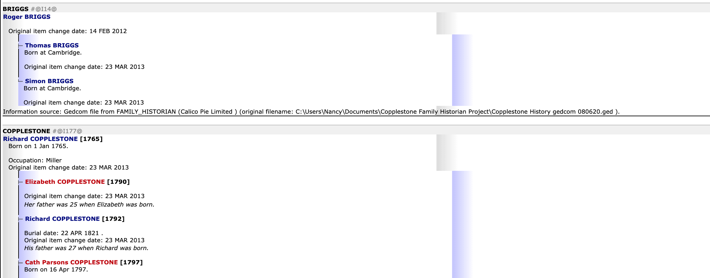
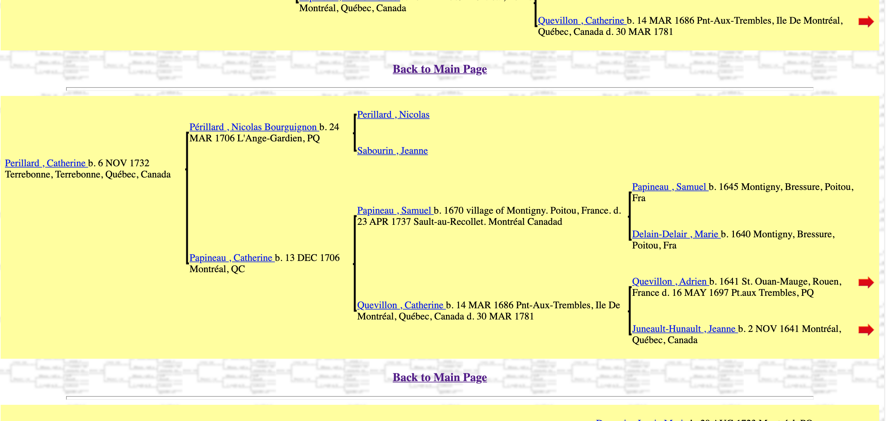
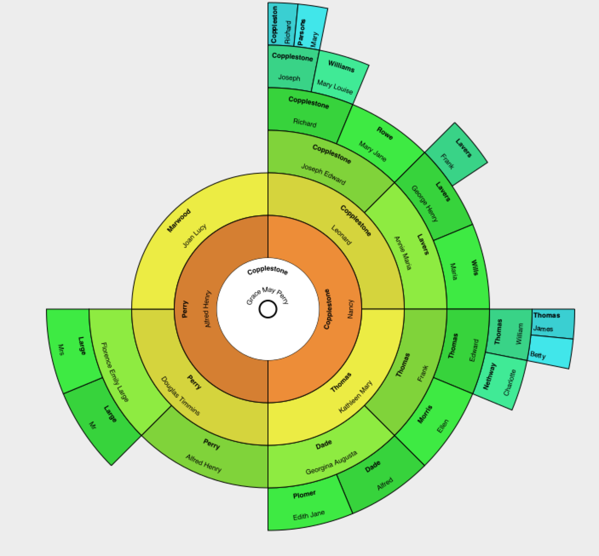
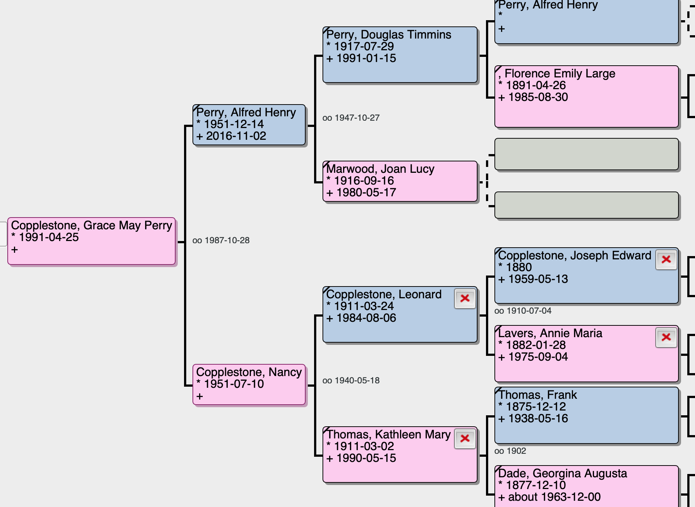
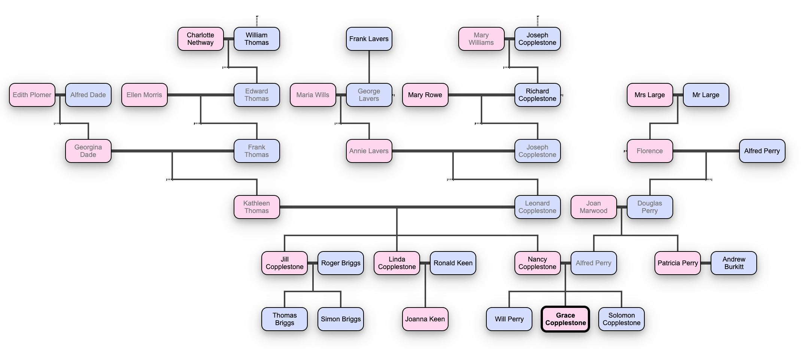
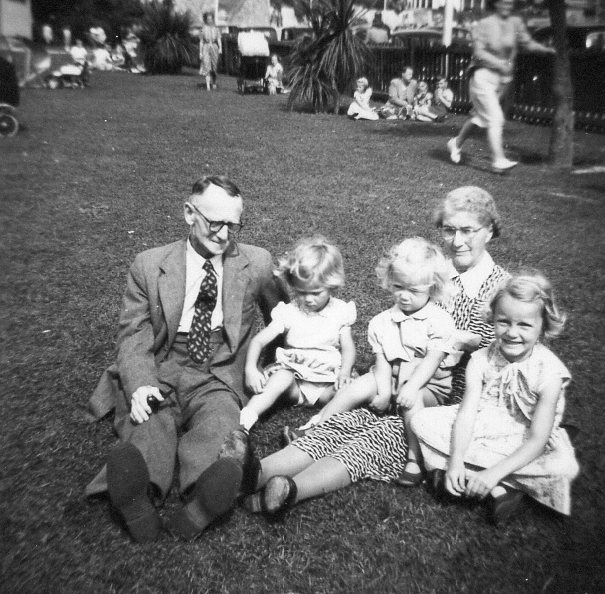
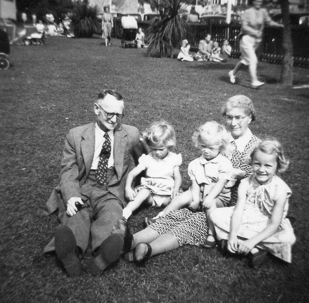

Create a website to display the Copplestone family tree. The information has been exported from some family history software as a GEDCOM file. Should include names, date of birth, photos if available, notes, gender, other?
There are 3 chunks of work:
For now we will tackle 2) and a bit of 1).

Information from Wikipedia:
Draw My Family tree is very quick and easy but not a nice layout.

Ged4web creates a set of webpages for you, although the layout of the tree isn't very intuative.

GRAMPS is open source software and has different viewing formats. When I imported the GEDCOM file it didn't notice a lot of the notes of the photos (which are links to locations on Mum's computer).
 
Family Echo Produces a family tree which is nicely zoomable. You can also export the html version of the page which I could edit a lot. Although perhaps this is enough. I'm not sure why all 213 people aren't showing up in the tree though. At the bottom of the page is the option to view Plain Text version. This helps to show all the information that we managed to export from Family Historian.

Mind mapping software like Lucid Charts or Mural are good but would require re-inputting all of the information again, although this could possibly be automated slightly.
Github has a repository limit of 100MB so I'd need to figure out a way to store them somewhere else.
 

Left - Auntie Rene,Claire Wills,J,L,N,@ Dingle,Shrewsbury July 1960.
Right - Grandad,Grandma,J,L,N
Left - J,L,N with pets & grandma
Right - Society of County Treasurers Conference, June 1953.Mum&Dad in centre
12 EUR per year for a domain name, or we can just use www.gracecopplestone.com/familyhistory for free.